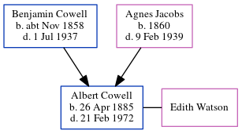

Minnie Gertrude Whittell (née Cowell) cNov 1886 - c1931
[ Home ] | [ Calendar ] | [ Surnames Index ] | [ Errors ] | [ Family History ]A dressmaker and the child of Benjamin Cowell (a woollen warehouse foreman) and Agnes Jacobs, Minnie Cowell, the third cousin twice-removed on the mother's side of Nigel Horne, was born in Chatham, Kent, England c. Nov 18861,2 and married Sydney Whittell (with whom she had 3 children: Ida Winifred Grace, Horace George and Kathleen B) in Medway, Kent, England around Aug 19114.
During her life, she was living at 5 Hope Street in Chatham on 5 Apr 18916 and on 31 Mar 19011 and at 157 Glencoe Road in Chatham on 2 Apr 19115 - less than a mile from her father Benjamin William who was living at 157 Glencoe Road in Chatham.
She died c. Nov 1931 in Chatham3.
Parents
- Benjamin William was born c. Nov 1858
- Agnes Sarah was born in 1860
Children
- Ida Winifred Grace was born on 31 Dec 1912
- Horace George was born on 11 Oct 1914
- Kathleen B was born in 1916
Citations
- 1901 England, Wales & Scotland Census - Findmypast (was age 14 and the daughter of the head of the household)
- England & Wales births 1837-2006 - Findmypast
- England & Wales deaths 1837-2007 - Findmypast
- England & Wales Marriages 1837-2005 - Findmypast
- 1911 Census for England & Wales - Findmypast (was age 24 and the daughter of the head of the household)
- 1891 England, Wales & Scotland Census - Findmypast (was age 4 and the daughter of the head of the household)
Media
England & Wales births 1837-2006 - BMD/B/1886/4/AZ/000124/314
England & Wales marriages 1837-2008 - BMD/M/1911/3/AZ/000219/098
England & Wales deaths 1837-2007 - BMD/D/1931/4/AZ/001019/046
Family Tree
Map
Generated by ged2site. Last updated on Jul 3, 2024